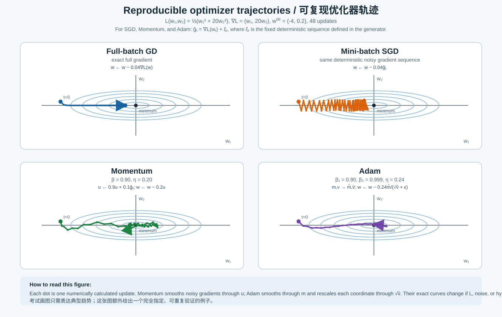

Optimizer trajectories / 优化器轨迹图
同一组椭圆是同一个 training loss 的等高线。中心为 minimum；不同优化器只是走向最低点的路径不同。

Exact updates used in the figure:
Momentum:
Adam:
Exam answer (English): With a massive dataset, full-batch GD has the smoothest trajectory because it uses the exact gradient over the full training set. Mini-batch SGD has noisy, zig-zag updates. Momentum replaces the raw noisy gradient with a moving average (velocity), which reduces high-frequency oscillation. Adam uses a first-moment moving average to smooth direction and a second-moment moving average to rescale each parameter update. The exact Momentum/Adam path depends on the loss surface, learning rate, momentum coefficients, and gradient noise; it can overshoot when these are poorly tuned.
中文：当数据集很大时，full-batch GD 使用完整数据的精确梯度，因此路径最平滑；mini-batch SGD 的梯度带噪声，所以会曲折抖动。Momentum 用梯度的移动平均（velocity）替代原始噪声梯度，从而降低高频振荡。Adam 用一阶矩移动平均平滑方向、用二阶矩移动平均缩放每个参数的更新。Momentum/Adam 的精确路径取决于损失曲面、学习率、动量系数和梯度噪声；若超参数设置不当，它们也可能 overshoot（越过最优点）。
Momentum:
uₜ = 0.9uₜ₋₁ + 0.1ĝₜ, wₜ₊₁ = wₜ − 0.2uₜ.Adam:
mₜ = 0.9mₜ₋₁ + 0.1ĝₜ, vₜ = 0.999vₜ₋₁ + 0.001ĝₜ², m̂ₜ = mₜ/(1−0.9ᵗ), v̂ₜ = vₜ/(1−0.999ᵗ), wₜ₊₁ = wₜ − 0.24m̂ₜ/(√v̂ₜ+ε).Exam answer (English): With a massive dataset, full-batch GD has the smoothest trajectory because it uses the exact gradient over the full training set. Mini-batch SGD has noisy, zig-zag updates. Momentum replaces the raw noisy gradient with a moving average (velocity), which reduces high-frequency oscillation. Adam uses a first-moment moving average to smooth direction and a second-moment moving average to rescale each parameter update. The exact Momentum/Adam path depends on the loss surface, learning rate, momentum coefficients, and gradient noise; it can overshoot when these are poorly tuned.
中文：当数据集很大时，full-batch GD 使用完整数据的精确梯度，因此路径最平滑；mini-batch SGD 的梯度带噪声，所以会曲折抖动。Momentum 用梯度的移动平均（velocity）替代原始噪声梯度，从而降低高频振荡。Adam 用一阶矩移动平均平滑方向、用二阶矩移动平均缩放每个参数的更新。Momentum/Adam 的精确路径取决于损失曲面、学习率、动量系数和梯度噪声；若超参数设置不当，它们也可能 overshoot（越过最优点）。
Source: files-from-teacher/BagOfQuestions/BagOfQuestions-session-5-ag.md